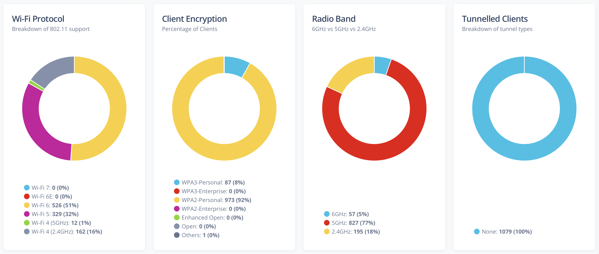
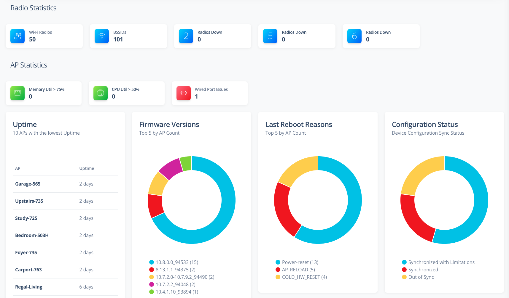
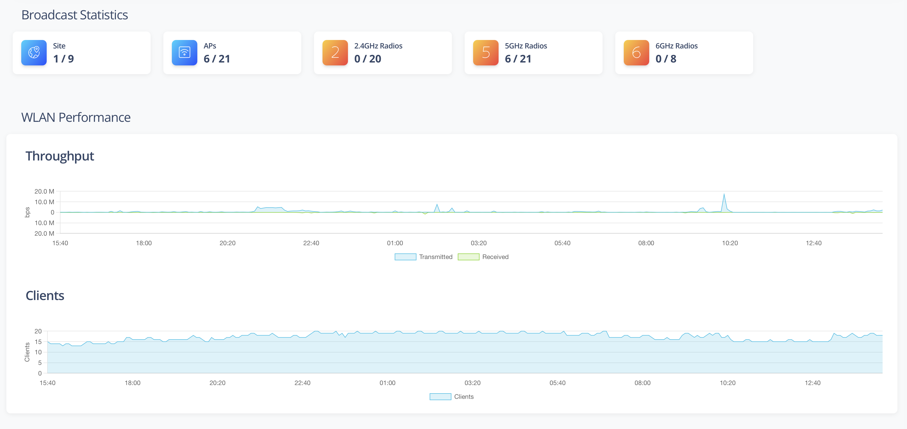
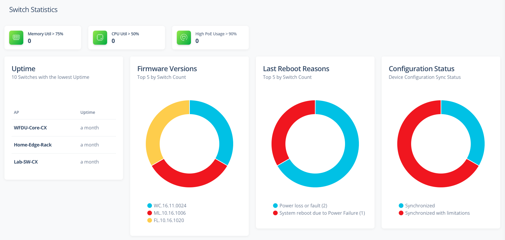
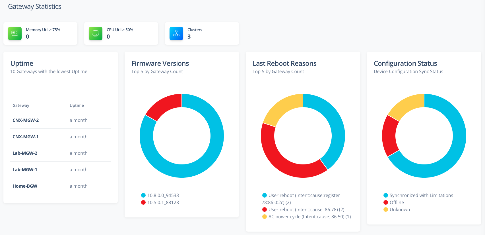
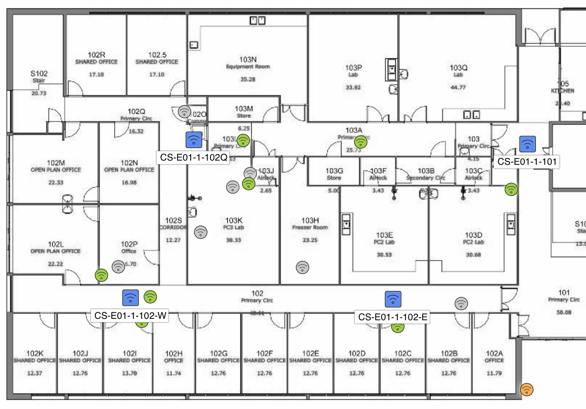
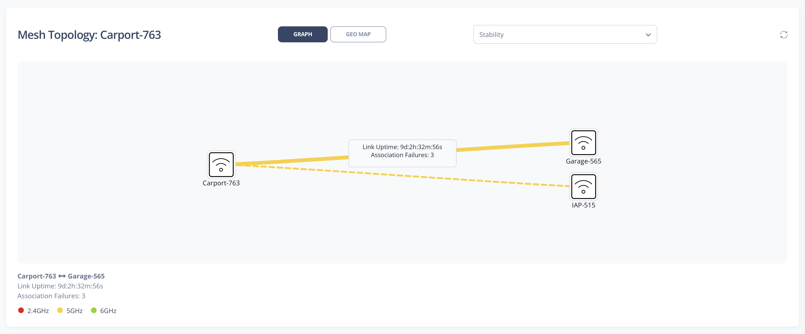
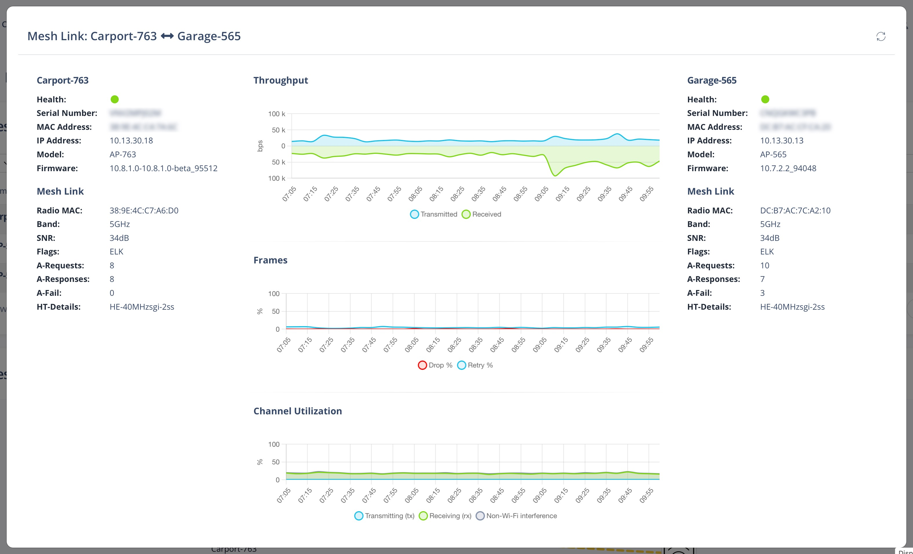
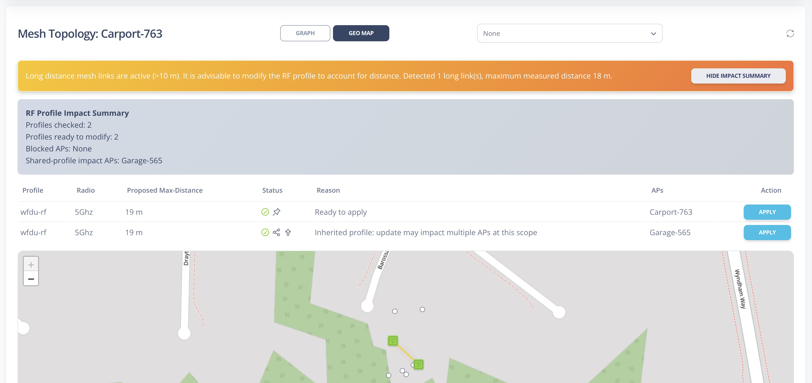

Monitoring
Clients
The Clients Statistics page displays data in the charts and tables that can be filtered based on the WLAN and Site dropdowns. The following statistics for clients are currently supported:
- Client Types chart with Group By options: Operating System, Manufacturer, Category, Vendor, Function, and Tags
- Client SNR Spread
- Client Channel Distribution (selectable by band: 2.4 GHz, 5 GHz, 6 GHz)
- Client VLAN Distribution
- 802.11 Protocol support
- Client Key Management (WPA3 vs WPA2 etc)
- Client Encryption Cipher (WPA3 vs WPA2 etc)
- Band Split (2.4GHz vs 5GHz vs 6GHz)
- Tunnelled Client Breakdown
- 802.11k support
- 802.11v support
- 802.11r support
- Authentication Types
- Randomized MAC Addresses
- MLO Operation Mode
The Client Types chart displays the top 10 groups by count for the selected Group By value.

Access Points
The AP Statistics page displays data in the charts and tables that can be filtered based on the Site dropdown. The following statistics for clients are currently supported:
- AP Model breakdown
- Radio Statistics
- Wi-Fi Radio information - including channel utilization, retry % and noise floor
- BSSID information
- Radio down information
- AP Statistics
- APs with high memory utilization
- APs with high CPU utilization
- APs connecting to the uplink at less than 1000Gbps
- APs with the highest client counts
- APs with the lowest uptime
- APs with the highest CPU utilization
- APs with the highest memory utilization
- Top 5 AP Firmware in use
- Last AP reboot reasons
- AP configuration status
- AP Negotiated Power status

WLANs
The WLAN Statistics page displays data in the tiles, charts and map that can be filtered based on the Site dropdown. The following statistics for clients are currently supported:
- Broadcast Statistics
- Sites advertising the selected WLAN
- APs advertising the selected WLAN
- Radios advertising the selected WLAN
- WLAN Performance
- Throughput of the selected WLAN over the last 24hrs
- Client count for the selected WLAN over the last 24hrs
- Geographic Distribution of the selected WLAN

Switches
The Switch Statistics page displays data in the charts and tables that can be filtered based on the Site dropdown. The following statistics for clients are currently supported:
- Switch Model breakdown
- Switch Statistics
- Switches with high memory utilization
- Switches with high CPU utilization
- Switches with high PoE usage
- Switches with the lowest uptime
- Switches with the highest CPU utilization
- Switches with the highest memory utilization
- Switches with the highest POE Consumption
- Top 5 Switch Firmware in use
- Last Switch reboot reasons
- Switch configuration status

Gateways
The Gateway Statistics page displays data in the charts and tables that can be filtered based on the Site dropdown. The following statistics for clients are currently supported:
- Gateway Model breakdown
- Gateway Statistics
- Gateway Cluster information
- Gateways with high memory utilization
- Gateways with high CPU utilization
- Gateways with the lowest uptime
- Gateways with the highest CPU utilization
- Gateways with the highest memory utilization
- Top 5 Gateway Firmware in use
- Last Gateway reboot reasons
- Gateway configuration status

Floorplans
The Floorplans page displays AP and Client data on floorplans.

Floorplans supports the following visualizations:
- AP Health: Health of every AP on the floor - determined by
- Down: AP Offline
- Poor: Memory Utilization > 90% or CPU Utilization > 70% or Uptime < 1hr
- Good: AP Online and no poor indications
- Channel: Show the channels being used by the APs
- Band: Will show only the channels for the selected band. APs will be colour coded based on the channel
- Channel: Only colour code the APs that match the selected channel
- Channel Bandwidth: Show the width channels being used by the APs
- Band: Will show only the channels for the selected band. APs will be colour coded based on the channel
- Channel: Only colour code the APs that match the selected channel
- Channel Utilization: Show the channel utilization of the Radios in each AP
- Band: Will show only the channel utilization for the selected band. APs will be colour coded based on the utilization percentage
- Channel: Only colour code the APs that match the selected channel
- Clients: Show Clients on the floorplan
- Band: Will show only the clients for the selected band
- Channel: Only clients with the selected Client OS
- Include Unassociated Clients: Hide/Show unassociated clients on the floorplan
- Show Client Labels: Hide/Show labels for each client
- Client Count: Show the number of clients associated with the AP
- Red: 50 or more Clients
- Orange: Between 25 and 50 Clients
- Green: Less than 25 Clients
- White: Down AP
- Noise Floor: Show the noise floor of the Radios in each AP
- Band: Will show only the noise floor for the selected band. APs will be colour coded based on the noise floor level
- Channel: Only colour code the APs that match the selected channel
- Radar: Show the number of Radar hits for each AP
- Pathloss Between APs: Shows the path loss in dB between APs
- Band: Will show only the noise floor for the selected band. APs will be colour coded based on the noise floor level
- Channel: Only colour code the APs that match the selected channel
- Note: Click an AP to see the pathloss lines between APs
Additional details:
- Click on a client and if the client has a reported SNR of its connection in Central, it will be displayed via a coloured line to the associated AP
- Click on an AP (when a band as been selected) and all clients associated to that AP will be shown via a coloured line (based on SNR)
- If a client is reported to be at the exact same location as an AP, then client is moved to a location closely surrounding the AP to improve visibility of the clients
- Floorplans are automatically converted to Greyscale - to improve legibility. This can be prevented by selecting the "Colour Floorplan" option
Mesh Topology
The Mesh Topology page lists APs with a Portal mesh role and builds an interactive topology graph using Aruba Central troubleshooting output.

- Portal table includes Name, Status, IP Address, Model, Serial, MAC, Site, Uptime, and a Topology action
- Topology is recursively discovered from the selected Portal using show ap mesh neighbours
- Relations are rendered as a graph: C/P links are primary, N links are dotted
- Supports two topology views: Graph (column layout) and Geo Map
- Geo viewport focuses on the selected Portal's discovered cluster rather than zooming to all possible sites
- Overlay details are shown only after clicking an link
- Supported overlays: None, Channel, Data Rate, Distance, Pathloss, Flags, SNR, and Stability
- Distance overlay shows meters under 1000m, otherwise km with 2 decimals (labels are shown only when both AP endpoints have valid coordinates)
- Supports double-click on mesh link to display link details

- Long-distance analysis runs automatically after topology build and does not require opening Geo Map first
- Long links trigger a warning banner and an impact summary with show/hide toggle
- Long-distance analysis displays when links over 500m are detected
- RF Profile Impact Summary groups affected APs by profile and radio, with profile-type and inherited indicators
- Apply action supports both SHARED and LOCAL profile updates with confirmation details
- After applying max-distance, affected AP scopes are rechecked and the impact summary is refreshed automatically
